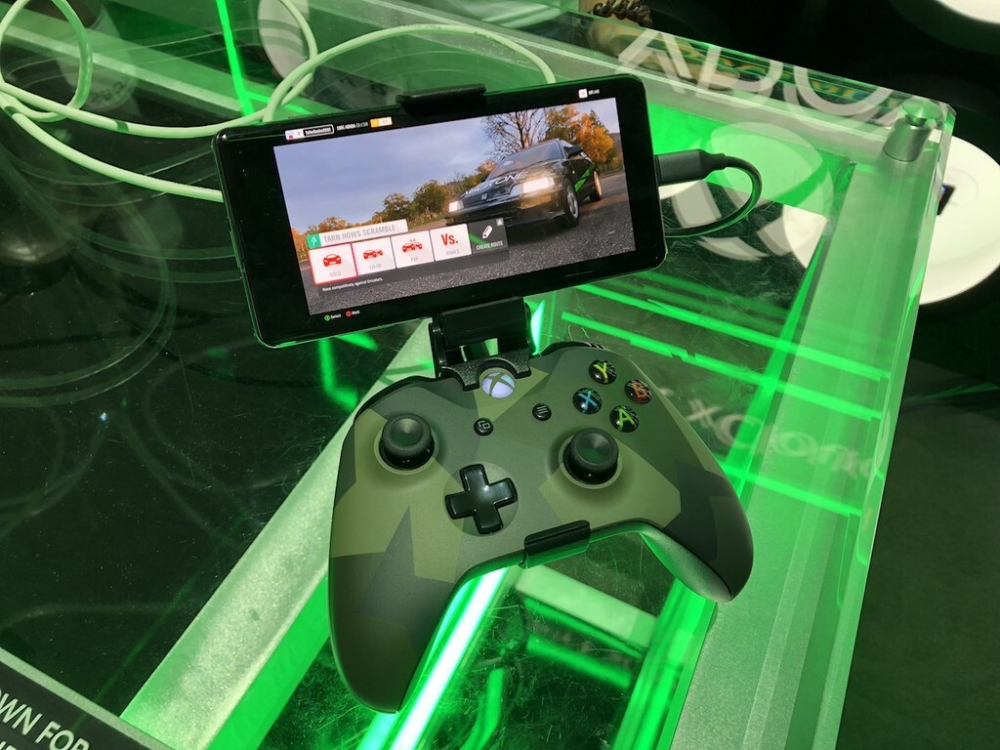

En una entrevista con The Verge, Phil Spencer, vice presidente ejecutivo de gaming de Microsoft, ha adelantado que xCloud va a dar el salto a los televisores inteligentes mediante una app. De esa forma, cualquier usuario que tenga una Smart TV podrá acceder a los videojuegos en streaming sin necesidad de más hardware que un mando Bluetooth, al menos en teoría. Ante la pregunta de qué está frenando a Microsoft a la hora de lanzar una app de Xbox que funcione en Smart TVs, Spencer responde que cree que "lo veréis en los próximos doce meses" y que no cree que "nada nos vaya a parar al hacerlo". Eso le daría a Microsoft una ventaja competitiva con respecto a sus rivales directos, que necesitan de hardware adicional para jugar en el televisor o, directamente, no son compatibles.xCloud es una de las grandes apuestas por los videojuegos de Microsoft. De forma muy astuta, la compañía lo incluyó sin coste adicional en Game Pass Ultimate, haciendo de la suscripción un servicio todavía más suculento y una vía de ingresos mensuales contantes y sonantes que, de alguna forma, mantiene al usuario pegado al ecosistema de Microsoft. El problema es que xCloud solo funciona en Android.
